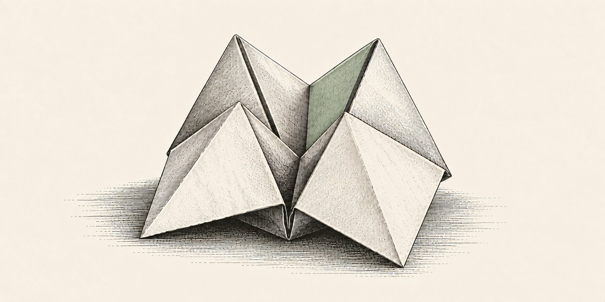

Origami (折り紙) folds a single sheet into a precise form, without a cut.
These models fold a general language model into a decision engine. The state is read once, and every question is answered in its own fold of it: a calibrated probability for every option, without generating a token.

Latest release
Qwen3.6-35B-A3B Origami v1.0 typed decisions · 8-bit
Give it a state and typed questions — yes/no, a choice among up to 255 options, a score on 2–10 levels — and it returns a probability for every option, calibrated per question type. It speaks TypeSafe's System One API (POST /v1/systemone), so a TypeSafe client can point at it, and it runs locally on Apple silicon: about 0.65 s for a five-question case on an M4 Max. Built for English and Spanish.
- 0.802accuracy on typed-decisions, against Jev 1.13.0's 0.727
- 0.081KL from the benchmark's soft gold, against Jev's 1.442
- 10th of 72on the Decision Index board, over 13 of its benchmarks
- 0.65 sfor a five-question case on an M4 Max, p50
- Origami v1.0
- other open decision models
- TypeSafe's Jev 1.13.0
typed-decisions: its test split, 400 cases and 2,000 decisions over four business workflows, scored against a soft gold from three teacher samples. Origami is trained on the benchmark's train split, as are OpenDecider, od1 and Laya typed-decisions; meraGPT Decider 1, Liquid AI d1 and Jev are not. Rows other than Origami's are as published on the benchmark's card, most of them self-reported. The benchmark's teacher agrees with itself on 0.735 of decisions, so accuracy above that measures agreement with its labels as much as correctness. Latency is measured in short runs; over hours of back-to-back requests a MacBook slows down, and requests took 1.4–2× as long.
Decision Index, by benchmark
- Origami v1.0, with its difference from Jev
- TypeSafe's Jev 1.13.0
Decision Index 0.2.1 on 13 of its 38 benchmarks, chosen before the run: the 12 that the board marks gold apart from ForecastBench, plus When2Call. It was run with the Index's own kit and scorers through Origami's server on an M4 Max, and every request was answered. Other models' scores are the board's, as published on 5 October 2026. The 13-benchmark average is not the Decision Index, which weighs five areas over all 38; without the three in-distribution benchmarks (*, whose train splits Origami is trained on) it ranks 9th of 63. The full Index follows. Origami is strongest on routing, classification and tool decisions, and well below Jev on knowledge-heavy reasoning (MMLU-Pro, BBH, GPQA, HLE). CLINC150 is low because of how the Index writes it: an empty state, with the request inside the question. With the request in the state, its in-scope accuracy rises from 0.80 to 0.95 on a 600-request sample. Put the text to decide on in the state.
Technical paper
A paper with the full method and measurements is in the writing.
Until then, every number on this page comes from the model card, which carries the evaluation details and the full tables.